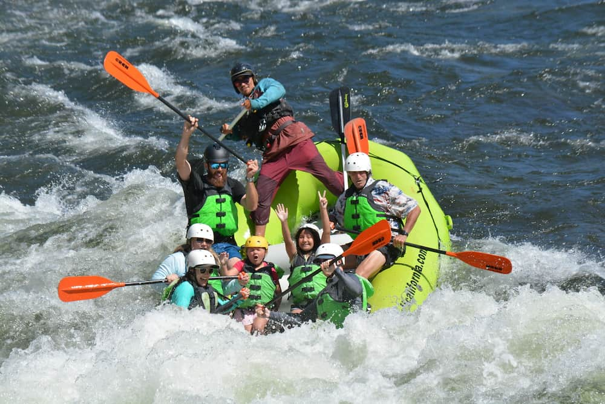
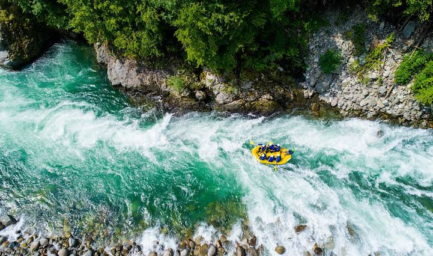
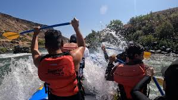
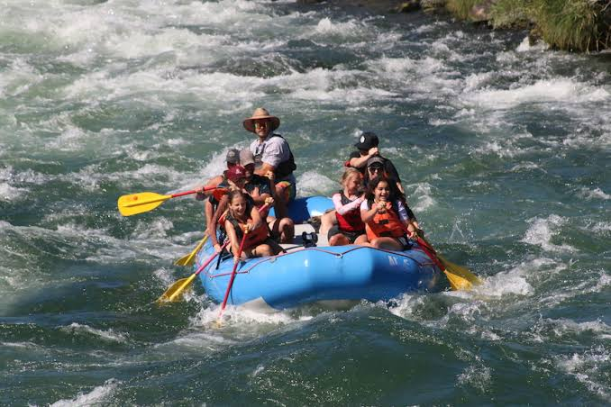
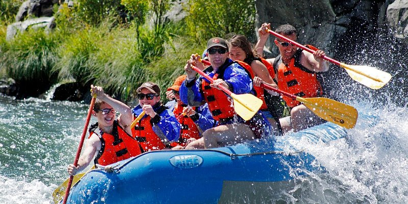
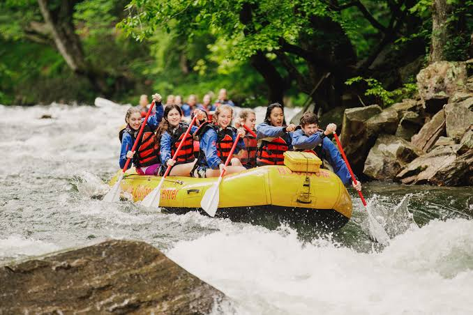

Providing unforgettable, safe, and thrilling whitewater experiences for families and adventure-seekers alike since 2010. Join us on the water!


Providing unforgettable, safe, and thrilling whitewater experiences for families and adventure-seekers alike since 2010. Join us on the water!
Founded along the roaring riverbanks, Dry Oar Rafting started with a single raft and a deep passion for sharing the wild beauty of the canyon. Over the past decade, we have grown into a premier whitewater outfitter while maintaining our core commitment to safety, expert guiding, and environmental stewardship.
Every season brings new stories on the water, with guided trips designed for first-time paddlers as well as experienced river runners looking for bigger challenges.




